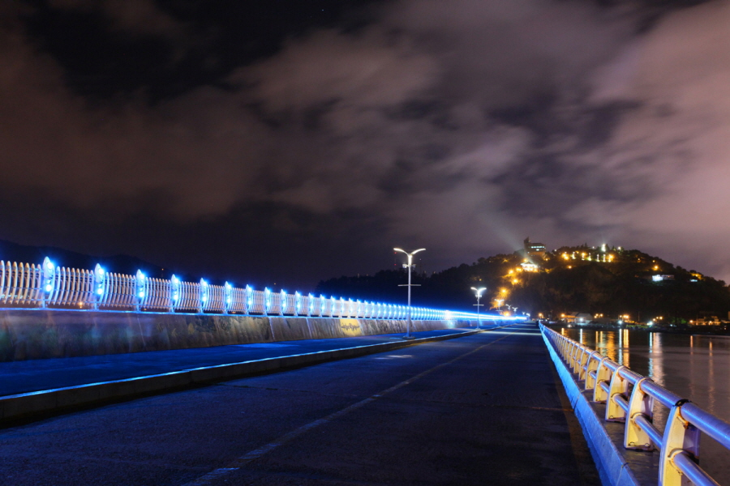

코스 보기

오동도
경관
- 주소
- 전라남도 여수시 수정동 산1-11
- 설명
- 이 길은 한국의 아름다운 길 100선에 선정된 바 있을 만큼 운치가 있으며, 한려해상국립공원에 속해 있습니다.
1
2.6 km
고소대
문화재
- 주소
- 전라남도 여수시 고소3길 13 사당
- 설명
- 이순신 장군이 수군훈련을 독려하고, 임진왜란 발발 후 작전 계획을 세우는 한편 군령을 내린 곳입니다.
2
1 km
하멜 전시관
전시/공연장
- 주소
- 전라남도 여수시 동문동
- 설명
- '하멜 표류기'로 잘 알려진 네덜란드 하멜 일행의 제주도 표착을 시작으로 여수에서 3년 6개월 간의 삶과 흔적을 모아 그들이 떠난 역사적인 장소에 하멜 전시관을 건립하였습니다.
3
0.3 km
거북선대교
경관
- 주소
- 전라남도 여수시 종화동
- 설명
- 2012 여수세계박람회 이전에 완공된 거북선대교는 화려한 경관 조명을 갖춘 명품 연륙교로, 여수 최고의 야경을 선사하는 곳 중 하나입니다.
4
0.8 km
해상케이블카
레저
- 주소
- 전라남도 여수시 돌산읍 돌산로 3600-1
- 설명
- 해상케이블카는 바다위를 지나 섬과 육지를 연결하는,국내 최초의 해상케이블카 입니다.
5